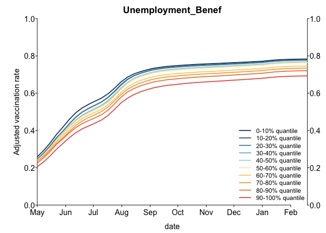
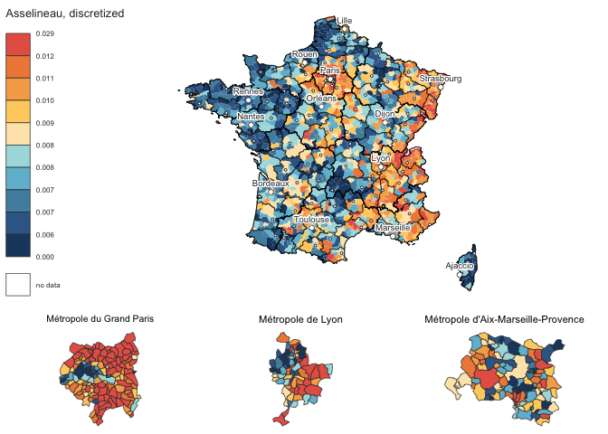

Vaccination
FD
Initializations
runComputations <- FALSELoad and clean data
- Indicators
# The data have been dealt with in "0_INSEE_predictors.R" and saved as RData
load("../data/predictors.RData")- Vaccination
# Source vaccination data
source("load-clean_vaccination.R")- Dates
# Get all dates in the vaccination dataset
vaccDates <- sort(unique(vacc$date))
range(vaccDates)## [1] "2021-01-03" "2022-02-20"# Define specific dates
date1 <- "2021-07-11" # Just before pass sanitaire announcement
date2 <- "2021-08-08" # Just before pass sanitaire comes into force
date3 <- "2021-08-29" # Before back to school
date4 <- "2022-01-02" # Last date of the yearDefine analysis functions
# Functions to discretize the data
source("1_functions-quantiles.R")
# `discretizeQ`
# Functions to recompute vaccination rates
source("1_functions-adjustAges.R")
# Other
invlogit <- function(x){exp(x)/(1 + exp(x))}
uniqueNoNA <- function(x){
out <- unique(x)
out <- out[!is.na(out)]
out
}
# Logistic model
source("1_functions-logisticRegression.R")
# Odds ratios
source("1_functions-oddsRatios.R")
# Functions for plotting
source("2_plot-manhattan.R")source("2_plot-overTime.R")Computation
Across median comparison
if(runComputations){
# Define the combinations of parameters to be tested
parmsLR <- expand.grid(varPred = names(dat.nocorr)[-1],
thedate = c(date1, date2, date3, date4),
predTransform = "discretize_factor",
vaccAge = "adults",
by.prbs = 0.5,
permutation = FALSE,
stringsAsFactors = FALSE)
# Permutation
# Number of repetitions
nrep <- 1000
# Base combination of parameters
tmpparmsPerm <- expand.grid(varPred = "French_nlty",
thedate = c(date1, date2, date3, date4),
predTransform = "discretize_factor",
vaccAge = "adults",
by.prbs = 0.5,
permutation = TRUE,
stringsAsFactors = FALSE)
# Add repeated parameters
for(i in 1:nrep){
parmsLR <- rbind(parmsLR, tmpparmsPerm)
}
rm(tmpparmsPerm)
# Initialize output
out <- as.data.frame(matrix(NA, ncol = 8, nrow = nrow(parmsLR)))
cat(nrow(parmsLR), " combinations to be tested\n")
# Compute OR for each combination of parameters
for(i in 1:nrow(parmsLR)){
if(i %% 10 == 0) cat(i, "") # Print counter
# Compute the logistic regression on this combination of parameters
mdl <- do.call(getLogReg, parmsLR[i, ])
# Extract the odds ratios
out[i, ] <- extractOR(mdl)
}
names(out) <- names(extractOR(mdl))
# Add the parameters
outLR <- cbind(parmsLR, out)
# Add type of predictor information
outLR$typePred <- dicPred[outLR$varPred]
# Full names
outLR$typePredFull <- dic.fullpred[outLR$typePred]
save(outLR, file = "outLR.RData")
}load("outLR.RData")
# PLOT
plotManhattan(outLR, ntop = 5)By deciles, quantitatively, adjusting ages
if(runComputations){
# Define the combinations of parameters to be tested
parmsDec <- expand.grid(varPred = names(dat.nocorr)[-1],
thedate = c(date1, date2, date3, date4),
predTransform = "discretize",
vaccAge = "by_age",
by.prbs = 0.1,
permutation = FALSE,
stringsAsFactors = FALSE)
# Permutation
# Base combination of parameters
tmpparmsPerm <- expand.grid(varPred = "French_nlty",
thedate = c(date1, date2, date3, date4),
predTransform = "discretize",
vaccAge = "by_age",
by.prbs = 0.1,
permutation = TRUE,
stringsAsFactors = FALSE)
# Add repeated parameters
for(i in 1:nrep){
parmsDec <- rbind(parmsDec, tmpparmsPerm)
}
rm(tmpparmsPerm)
newd <- expand.grid(age.f = as.factor(ages), pred.std = 1:10)
cat(nrow(parmsDec), " combinations to be tested\n")
out <- as.data.frame(matrix(NA, ncol = 4, nrow = nrow(parmsDec)))
# Compute OR for each combination of parameters
for(i in 1:nrow(parmsDec)){
if(i %% 10 == 0) cat(i, "") # Print counter
# Compute the logistic regression on this combination of parameters
mdl <- do.call(getLogReg, parmsDec[i, ])
# Predicted values
predsC <- adjustedPredict(mdl, newd, includeChildren = TRUE)
predsA <- adjustedPredict(mdl, newd, includeChildren = FALSE)
# Compute odds ratios
ORC <- getORfromPredict(c(predsC[predsC$pred.std == 10, "adjustedRate"], predsC[predsC$pred.std == 1, "adjustedRate"]))
ORA <- getORfromPredict(c(predsA[predsA$pred.std == 10, "adjustedRate"], predsA[predsA$pred.std == 1, "adjustedRate"]))
out[i, ] <- c(ORC, ORA, max(ORC, 1/ORC), max(ORA, 1/ORA))
}
names(out) <- c("OR.withChildren", "OR.adults", "OR.abs.withChildren", "OR.abs.adults")
dim(out)
# Add the parameters
outDec <- cbind(parmsDec, out)
# Add type of predictor information
outDec$typePred <- dicPred[outDec$varPred]
# Full names
outDec$typePredFull <- dic.fullpred[outDec$typePred]
save(outDec, file = "outDec.RData")
}load("outDec.RData")
suffix <- ".withChildren"
xx <- outDec
xx$OR <- outDec[, paste0("OR", suffix)]
xx$OR.abs <- outDec[, paste0("OR.abs", suffix)]
xx$OR.abs.CI.max <- outDec[, paste0("OR.abs", suffix)]
plotManhattan(xx, ntop = 5)
suffix <- ".adults"
xx <- outDec
xx$OR <- outDec[, paste0("OR", suffix)]
xx$OR.abs <- outDec[, paste0("OR.abs", suffix)]
xx$OR.abs.CI.max <- outDec[, paste0("OR.abs", suffix)]
plotManhattan(xx, ntop = 5)Over time
if(runComputations){
dates <- sort(unique(vacc$date))
minDate <- "2021-05-01"
dates <- dates[dates >= minDate]
# Define the combinations of parameters to be tested
parmsTime <- expand.grid(varPred = c("Unemployment_Benef", "Immigrant", "Asselineau"),
thedate = dates,
predTransform = "discretize_factor",
vaccAge = "by_age",
by.prbs = 0.1,
permutation = FALSE,
stringsAsFactors = FALSE)
dim(parmsTime)
newd <- expand.grid(age.f = as.factor(ages), pred.std = as.factor(1:10))
# Initialize output
outC <- outA <- as.data.frame(matrix(NA, ncol = 10, nrow = nrow(parmsTime)))
# Compute OR for each combination of parameters
for(i in 1:nrow(parmsTime)){
if(i %% 10 == 0) cat(i, "") # Print counter
# Compute the logistic regression on this combination of parameters
mdl <- do.call(getLogReg, parmsTime[i, ])
# Predicted values
predsC <- adjustedPredict(mdl, newd, includeChildren = TRUE)
predsA <- adjustedPredict(mdl, newd, includeChildren = FALSE)
# Save
outC[i, ] <- predsC$adjustedRate
outA[i, ] <- predsA$adjustedRate
}
outC <- cbind(parmsTime, outC)
outA <- cbind(parmsTime, outA)
save(outC, outA, dates, file = "outTime.RData")
}load("outTime.RData")
plotPropTime(outC)
plotPropTime(outA)Geographic
library(mapsf)## Loading required package: sf## Linking to GEOS 3.9.1, GDAL 3.3.1, PROJ 8.1.0# Geographic information for maps
load("../data/mapFiles_withDepReg.RData")
load("../data/chefslieux.RData")#varPred <- "X1564_OtherInactive_amg_NW"
source("2_plot-map.R")
plotMapVar("Unemployment_Benef", byp = 0.1)
plotMapVar("Unemployment_Benef", byp = 0.5)
plotMapVar("Unemployment_Benef", byp = 0.1)vv <- dat.all[, "Unemployment_Benef"]
plot(discretizeQ(vv, seq(0, 1, 0.1)),
discretizeQ(vv, seq(0, 1, 0.5)))
plotMapVar("Asselineau", byp = 0.1)plotMapVar("Abstention", byp = 0.1)plotMapVar("Immigrant", byp = 0.1)plotMapVar("X1564_OtherInactive_amg_NW", byp = 0.1)
Essais
v <- dat.all[, c("codgeo", "French_nlty")]
vx <- v[which(is.na(v$French_nlty)), ]
vx
v[1, ]
head(v)
tail(v)
library(inseeLocalData)
?inseeLocalData
#install.packages("insee")
library(insee)
get_dataset_list()
https://api.insee.fr/donnees-locales/V0.1/donnees/geo-POP@GEO2021RP2018/EPCI-247100647.INATC?prcomp
# Predictors
# New dataset with the predictors
dat2 <- dat.nocorr[, -1]
# For each predictor
for(col in colnames(dat2)){
# Get the subset of the data
v <- dat2[, col]
# Compute the mean value, excluding NAs
mv <- mean(v, na.rm = TRUE)
# Fill in NAs with the mean
v[is.na(v)] <- mv
# Put back in the table
dat2[, col] <- v
}
pca <- prcomp(dat2, center = TRUE, scale = TRUE)
ggbiplot(pca)
head(pca)
library(devtools)
install_github("vqv/ggbiplot")
library(ggbiplot)
plot(pca$x[, c("PC1", "PC2")])
pcax <- as.data.frame(pca$x)
pcax$codgeo <- dat.nocorr$codgeo
thedate <- date3
sub <- vacc[which(vacc$date == thedate & vacc$classe_age != "TOUT_AGE"), ]
subb <- adultVacc(sub)
sub3 <- merge(subb, pcax, all = TRUE, by = "codgeo")
sub3$typeTaux <- discretizeQ(sub3$taux_cumu, prbs = seq(0, 1, by = 0.1))
palCat <- rev(met.brewer("Hiroshige", n = 10, type = "continuous"))
names(palCat) <- 1:10
plot(sub3$PC1, sub3$PC2, col = palCat[sub3$typeTaux], pch = 16)
str(pca)
head(sub3)
dim(subb)
dim(pcax)
sort(pca$rotation[, "PC1"], decreasing = TRUE)[1:30]
sort(pca$rotation[, "PC2"], decreasing = TRUE)[1:30]
head(pca)
summary(pca)
pca$sdev / sum(pca$sdev)
str(pca)
length(pca$rotation[, "PC2"])
length(subb$taux_cumu)
plot(sub3$PC2, sub3$taux_cumu)
out <- matrix(NA, nrow = (ncol(pcax) - 1), ncol = 4)
for(i in 1:(ncol(pcax) - 1)){
mdl <- cor.test(sub3[, paste0("PC", i)], sub3$taux_cumu)
out[i, ] <- c(mdl$estimate, mdl$conf.int, mdl$p.value)
}
out <- as.data.frame(out)
names(out) <- c("estimate", "ci1", "ci2", "pval")
out$PC <- seq_len(nrow(out))
out[order(abs(out$estimate), decreasing = TRUE), ][1:5, ]
ii <- out[order(abs(out$estimate), decreasing = TRUE), ][1:5, "PC"]
# Composition of the PCs
for(i in ii){
print(i)
print(t(sort(pca$rotation[, paste0("PC", i)], decreasing = TRUE)[1:20]))
}
sort(pca$rotation[, "PC2"], decreasing = TRUE)[1:30]
plot(sort(abs(out$estimate)))
range(out$estimate)
head(out)
mdl2 <- cor.test(sub3$PC2, sub3$taux_cumu)
mdl2
mdl1 <- cor.test(sub3$PC1, sub3$taux_cumu)
mdl1
str(mdl1)
summary(mdl1)
mdl3 <- cor.test(sub3$PC3, sub3$taux_cumu)
mdl3
summary(mdl)
library(nlme)
?gls
gls(divspe ~ loggrad_urb+grad_agrimean, method = "ML",
corr=corExp(c(300000,0.7), form=~x_lambert93+y_lambert93, nugget=T),
na.action = na.omit, data = df)